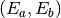
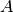
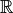
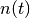
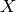

In this tutorial we will discuss NiPy’s model and specification of a fMRI experiment.
This involves:
We first begin by describing typically encountered fMRI designs.
This design is a canonical design in fMRI used, for instance, in an experiment designed to detect regions associated to discrimination between Face and Object. This design can be graphically represented in terms of delta-function responses that are effectively events of duration 0 and infinite height.
[source code, hires.png, pdf]
In this example, there Face event types are presented at times [0,4,8,12,16] and Object event types at times [2,6,10,14,18].
More generally, given a set of event types V, an event type experiment can be modeled as a sum of delta functions (point masses) at pairs of times and event types:
Formally, this can be thought of as realization of a marked point
process, that says we observe 10 points in the space  where V is the set of all event types. Alternatively, we can think of the
experiment as a measure
where V is the set of all event types. Alternatively, we can think of the
experiment as a measure  on
on
![E([t_1,t_2] \times A) = \int_{t_1}^{t_2} \int_A dE(v,t)](../_images/math/801c82ef63c75f893f9023d8af78347f4bd8ff0d.png)
This intensity measure determines, in words, “the amount of stimulus
within A delivered in the interval ![[t_1,t_2]](../_images/math/cf22ccb564d6f9393afb0a4bd5c1bd489bd28626.png) ”. In this categorical
design, stimuli are delivered as point masses at the times
.
”. In this categorical
design, stimuli are delivered as point masses at the times
.
Practically speaking, we can read this as saying that our experiment has 10 events, occurring at times with event types .
Typically, as in our Face vs Object example, the events occur in groups, say odd events are labelled a, even ones b. We might rewrite this as
This type of experiment can be represented by two counting processes, i.e. measures on ,  defined as
Though the experiment above can be represented in terms of the pair , it is more common in neuroimaging applications to work with instantaneous intensities rather then cumulative intensities.
For the time being, we will stick with cumulative intensities because it unifies the designs above. When we turn to the neuronal model below, we will return to the intensity model.
For block designs of the Face vs. Object type, we might also allow event durations, meaning that we show the subjects a Face for a period of, say, 0.5 seconds. We might represent this experiment graphically as follows,
[source code, hires.png, pdf]
and the intensity measure for the experiment could be expressed in terms of
The normalization chosen above ensures that each event has integral 1, that is a total of 1 “stimulus unit” is presented for each 0.5 second block. This may or may not be desirable, and could easily be changed.
Some experiments do not fit well into this “event-type” paradigm but are, rather, more continuous in nature. For instance, a rotating checkerboard, for which orientation, contrast, are functions of experiment time t. This experiment can be represented in terms of a state vector . In this example we have set
import numpy as np
t = np.linspace(0,10,1000)
o = np.sin(2*np.pi*(t+1)) * np.exp(-t/10)
c = np.sin(2*np.pi*(t+0.2)/4) * np.exp(-t/12)
[source code, hires.png, pdf]

The cumulative intensity measure for such an experiment might look like
In words, this reads as is the amount of time in the
interval for which the state vector was
in the region .
Another (event-related) experimental paradigm is one in which the event types have amplitudes, perhaps in a pain experiment with a heat stimulus, we might consider the temperature an amplitude. These amplitudes could be multi-valued. We might represent this parametric design mathematically as
which is virtually identical to our description of the Face vs. Object experiment in face-object though the values are floats rather than labels. Graphically, this experiment might be represented as in this figure below.
[source code, hires.png, pdf]
Another possible approach to specifying an experiment might be to deliver a randomly generated stimulus, say, uniformly distributed on some interval, at a set of prespecified event times.
We might represent this graphically as in the following figure.
[source code, hires.png, pdf]
Of course, the stimuli need not be randomly distributed over some interval, they could have fairly arbitrary distributions. Or, in the Face vs Object scenario, we could randomly present of one of the two types and the distribution at a particular event time would be represented by a probability .
The cumulative intensity model for such an experiment might be
If the times were not prespecified but were themselves random, say uniform over intervals , we might modify the cumulative intensity to be
[source code, hires.png, pdf]
The neuronal model is a model of the activity as a function of t at a neuron
x given the experimental model . It is most commonly expressed as
some linear function of the experiment . As with the experimental
model, we prefer to start off by working with the cumulative neuronal activity,
a measure on , though, ultimately we will work with the
intensities in intensity.
Typically, the neuronal model with an experiment model has the form
Unlike the experimental model, which can look somewhat abstract, the neuronal model can be directly modeled. For example, take the standard Face vs. Object model face-object, in which case and we can set
Thus, the cumulative neuronal model can be expressed as
from sympy import Symbol, Heaviside
t = Symbol('t')
ta = [0,4,8,12,16]
tb = [2,6,10,14,18]
ba = Symbol('ba')
bb = Symbol('bb')
fa = sum([Heaviside(t-_t) for _t in ta]) * ba
fb = sum([Heaviside(t-_t) for _t in tb]) * bb
N = fa+fb
Or, graphically, if we set and , as
[source code]Exception occurred rendering plot.
In the block design, we might have the same form for the neuronal model (i.e.
the same  above), but the different experimental model yields
above), but the different experimental model yields
from sympy import Symbol, Piecewise
ta = [0,4,8,12,16]; tb = [2,6,10,14,18]
ba = Symbol('ba')
bb = Symbol('bb')
fa = sum([Piecewise((0, (t<_t)), ((t-_t)/0.5, (t<_t+0.5)), (1, (t >= _t+0.5))) for _t in ta])*ba
fb = sum([Piecewise((0, (t<_t)), ((t-_t)/0.5, (t<_t+0.5)), (1, (t >= _t+0.5))) for _t in tb])*bb
N = fa+fb
Or, graphically, if we set and , as
[source code]Exception occurred rendering plot.
The function above can be expressed as
Hence, our typical neuronal model can be expressed as a sum
for arbitrary functions . Above,
represents the stimulus contributed to  from the function .
In the Face vs. Object example face-object, these cumulative
intensities are related to the more common of neuronal model of intensities in
terms of delta functions
from the function .
In the Face vs. Object example face-object, these cumulative
intensities are related to the more common of neuronal model of intensities in
terms of delta functions
from sympy import Symbol, Heaviside
ta = [0,4,8,12,16]
t = Symbol('t')
ba = Symbol('ba')
fa = sum([Heaviside(t-_t) for _t in ta]) * ba
print(fa.diff(t))
ba*(DiracDelta(t) + DiracDelta(t - 16) + DiracDelta(t - 12) + DiracDelta(t - 8) + DiracDelta(t - 4))
[source code, hires.png, pdf]
In our continuous example above, with a periodic orientation and contrast, we might take
yielding a neuronal model
We might also want to allow a delay in the neuronal model
This delay can be represented mathematically in terms of convolution (of measures)
Another model that uses convolution is the Face vs. Object one in which the
neuronal signal is attenuated with an exponential decay at time scale

yielding
We described a model above event-amplitude with events that each have a
continuous value  attached to them. In terms of a neuronal model, it
seems reasonable to suppose that the (cumulative) neuronal activity is related
to some function, perhaps expressed as a polynomial yielding a neuronal model
attached to them. In terms of a neuronal model, it
seems reasonable to suppose that the (cumulative) neuronal activity is related
to some function, perhaps expressed as a polynomial yielding a neuronal model
The hemodynamic model is a model for the BOLD signal, expressed as some function of the neuronal model. The most common hemodynamic model is just the convolution of the neuronal model with some hemodynamic response function,
The canonical one is a difference of two Gamma densities
[source code]Exception occurred rendering plot.
Hemodynamic models are, as mentioned above, most commonly expressed in terms of instantaneous intensities rather than cumulative intensities. Define
The simple model above can then be written as
In the Face vs. Object experiment, the integrals above can be evaluated explicitly because  is a sum of delta functions
In this experiment we may want to allow different hemodynamic response functions
within each group, say within group and within
group  . This yields a hemodynamic model
. This yields a hemodynamic model
from nipy.modalities.fmri import hrf
ta = [0,4,8,12,16]; tb = [2,6,10,14,18]
ba = 1; bb = -2
na = ba * sum([hrf.glover(hrf.T - t) for t in ta])
nb = bb * sum([hrf.afni(hrf.T - t) for t in tb])
n = na + nb
Exception occurred rendering plot.
Applying the simple model to the events with amplitude model and the canonical HRF yields a hemodynamic model
import numpy as np
from nipy.modalities.fmri.utils import events, Symbol
a = Symbol('a')
b = np.linspace(0,50,6)
amp = b*([-1,1]*3)
d = events(b, amplitudes=amp, g=a+0.5*a**2, f=hrf.glover)
Exception occurred rendering plot.
In cases where the neuronal model has more than one derivative, such as the continuous stimuli continuous-stimuli example, we might model the hemodynamic response using the higher derivatives as well. For example
where
![\begin{aligned}
\tilde{n}_f(t) &= \frac{\partial}{\partial t} \tilde{N}_f((-\infty,t]) \\
&= \frac{\partial}{\partial t} \left(
\int_{-\infty}^t \int_V f(v,t) \; dE(v,t) \right)
\end{aligned}](../_images/math/dd2eae7f21b8fed94a7cb2f48c317a91f8dae43b.png)
In a typical GLM analysis, we will compare the observed BOLD signal
at some fixed voxel  , observed at time points , to a hemodynamic response model. For instance, in the Face vs.
Object model, using the canonical HRF
, observed at time points , to a hemodynamic response model. For instance, in the Face vs.
Object model, using the canonical HRF
where is the correlated noise in the BOLD data.
Because the BOLD is modeled as linear in this fits into a multiple linear regression model setting, typically written as
In order to fit the regression model, we must find the matrix . This
is just the derivative of the model of the mean of  with respect to the
parameters to be estimated. Setting
with respect to the
parameters to be estimated. Setting
We sometimes include a natural spline model of the drift here.
This changes the design matrix by adding more columns, one for each function in our model of the drift. In general, starting from some model of the mean the design matrix is the derivative of the model of the mean, differentiated with respect to all parameters to be estimated (in some fixed order).
The delayed continuous stimuli example above is an example of a nonlinear function of the mean that is nonlinear in some parameters, .
This experience of building the model can often be simplified, using what is known in :ref:R as formula objects. NiPy has implemented a formula object that is similar to R’s, but differs in some important respects. See nipy.algorithms.statistics.formula.
{kind=link}
{kind=link}
{kind=link}
{kind=link}
{kind=link}
{kind=link}
{kind=link}